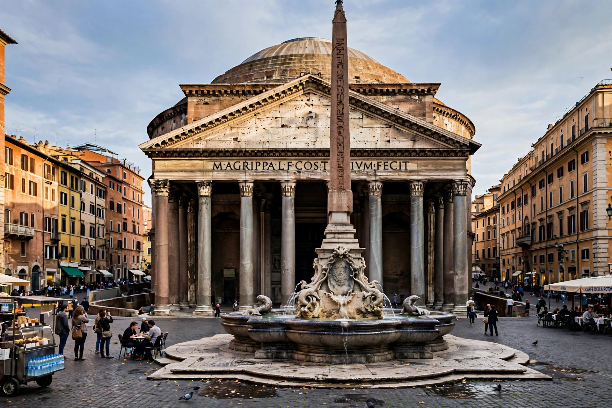

Pantheon, Rome
| Pantheon | |
|---|---|
| Location | Piazza della Rotonda, Rome, Italy |
| Completed | c. AD 118–125 (Hadrianic rebuilding) |
| Dome | 43.3 m internal diameter — world's largest unreinforced concrete dome |
| Current use | Catholic church (Santa Maria ad Martyres) and tomb |

The Pantheon (from Greek Πάνθειον, "temple of all the gods") is a former Roman temple and, since AD 609, a Catholic church in Rome, on the site of an earlier temple commissioned by Marcus Agrippa during the reign of Augustus. The present building was completed by the emperor Hadrian around AD 118–125, retaining Agrippa's original dedication inscription on the portico.
Architecture
The building joins a classical columned portico — eight massive granite Corinthian columns — to a vast circular rotunda under a coffered concrete dome. The dome's diameter of 43.3 metres equals the height from floor to the central oculus, an 8.2-metre open eye that is the interior's only source of natural light and a masterpiece of Roman engineering: aggregate grows lighter toward the top, from travertine to pumice. Nearly two millennia old, it remains the world's largest unreinforced concrete dome and a model for Renaissance and later architects from Brunelleschi to Jefferson.
History and burials
Consecrated as the church of St Mary and the Martyrs in 609, the Pantheon survived largely intact — though its bronze roof tiles and portico decorations were stripped in the 17th century, partly for Bernini's baldacchino in St Peter's and the cannons of Castel Sant'Angelo. It serves as the burial place of Italian kings Vittorio Emanuele II and Umberto I and of the Renaissance painter Raphael.
See also: Hadrian, Roman architecture, Rotunda, Raphael.